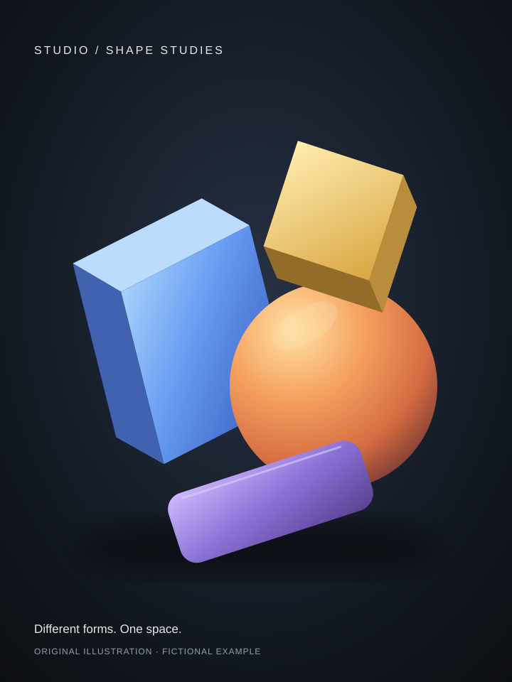
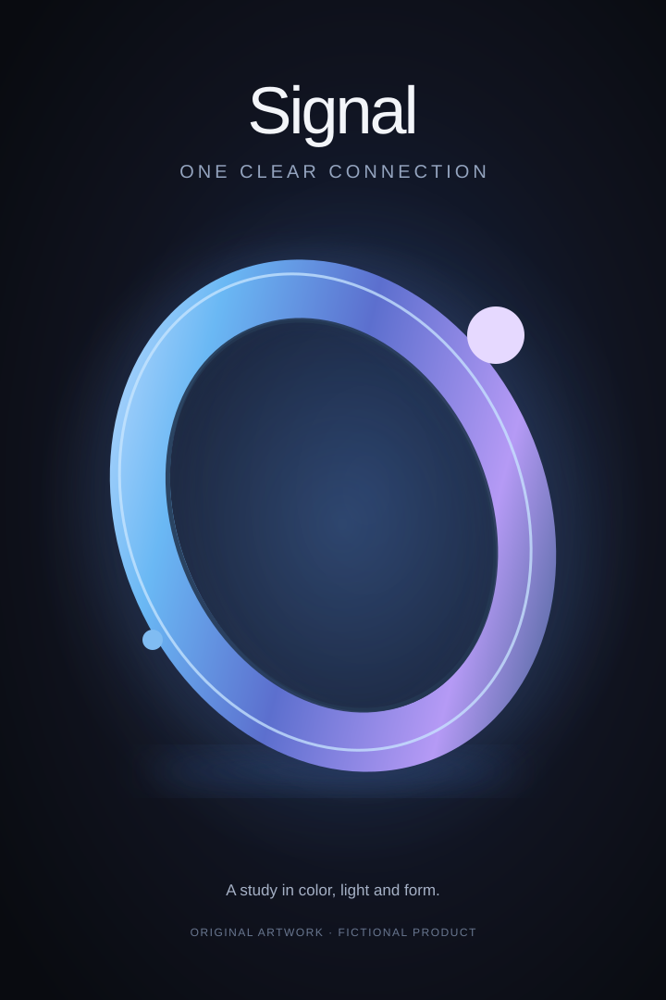
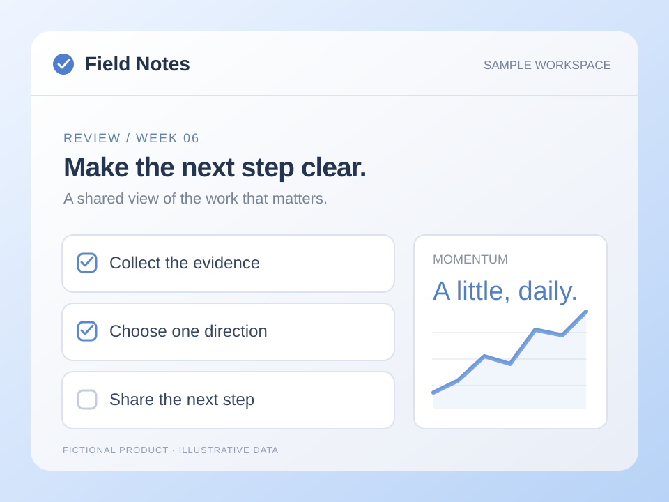
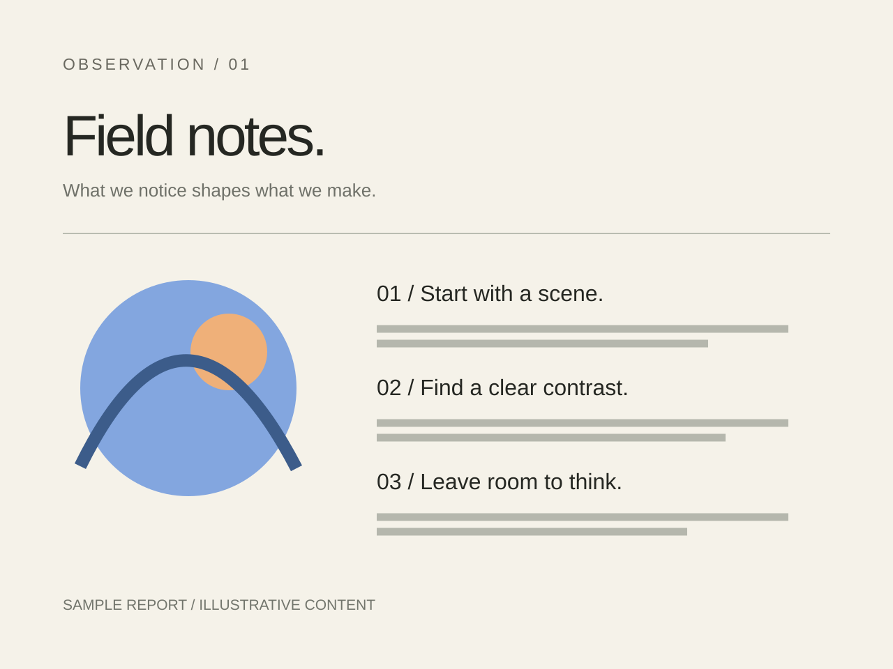
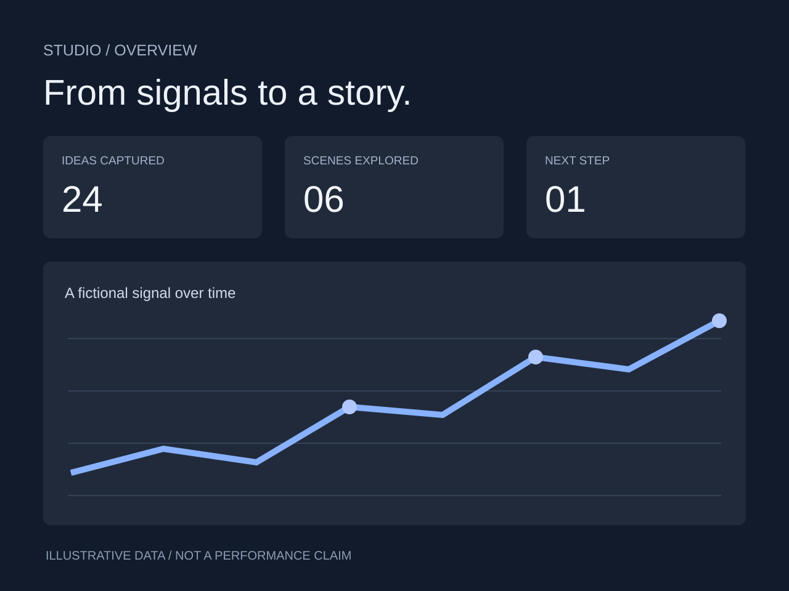

24개
모아 둔 아이디어
24개
모아 둔 아이디어

6가지
연결한 작업

BUILD
생각을 실행으로.
CREATE
다르게 만들어요.


3단계
다음 행동으로 연결


24개
남겨 둔 관찰
6가지
함께 묶은 주제
A FIELD STUDY
관찰을 다음 행동으로.
기록 조각 / 08
“처음에
어디로 가죠?”
듣고 남긴 장면
맥락까지
함께 기록하기.
한 장으로 정리한 발견
안내가 늦다.
동선이 안 보인다.
선택지가 많다.
3개
정해 둔 다음 행동